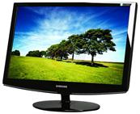
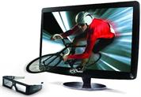

Как выбрать монитор.

Выбирать компьютерный монитор следует особенно тщательно, поскольку из всех составляющих компьютера он дольше всего не теряет своей актуальности.
Как правило, мониторы с компьютером покупают в Минске на 5 или более лет. В настоящий момент в продаже вы уже не найдете стеклянных мониторов старого образца, на смену им
давно пришли жидкокристаллические дисплеи. Каковы же основные особенности ЖК монитора, на которые следует обращать внимание?
Прежде всего, следует определиться с формой монитора. В настоящий момент все большую популярность приобретают широкоформатные (прямоугольные) мониторы,
однако квадратные дисплеи не сдают своих позиций. Однозначного ответа на вопрос, какой из них лучше, нет, все зависит от субъективных предпочтений
пользователя.
Определяясь с размером диагонали, следует ориентироваться не только на собственный кошелек, но и на то, как вы собираетесь использовать свой монитор.
Если компьютер будет использоваться только для работы с офисными программами или для выхода в интернет, то особой нужды в большом мониторе нет. Для
игр или просмотра кинофильмов желателен экран размером от 20”.
От угла обзора зависит неизменность качества картинки при отклонении от центрального положения перед экраном. Желательно чтобы он был широким,
особенно если вы собираетесь просматривать фильмы.
Под временем отклика пикселей понимается полный промежуток времени, за который ячейка дисплея изменит цвет. Единица измерения - миллисекунды. При
слишком большом времени отклика возможно появление пятен или видимых шлейфов за движущимися объектами, особенно во время компьютерных игр или
просмотра видео. Данный показатель в современных мониторах удалось снизить до 2-8 мс, поэтому эта проблема практически потеряла свою актуальность.
От контрастности зависит диапазон ширины темных и светлых оттенков, отображаемый на экране. Этот параметр важен для тех, кто собирается работать с
фотографиями или чертежами. При выборе убедитесь, что есть возможность отрегулировать черный цвет, он должен иметь чернильно-черное изображение.
Яркость. Чем выше яркость монитора, тем лучше будет отображаться картинка на мониторе при высоком уровне освещенности помещения.
Тип матрицы. Эту характеристику особенно следует учитывать, если вы собираетесь работать с фотографиями или цветом. На современном рынке мониторов
в настоящий момент представлены следующие типы матриц:
1. Ж/к Мониторы с TN матрицей. Плюсы: низкая цена, небольшое время отклика пикселей, низкое энергопотребление. Минусы: не самая лучшая контрастность,
сниженная точность цветопередачи (черный больше похож на серый). Подобный монитор подойдет для работы с офисными программами и для игр.
2. Ж/к мониторы с IPS матрицей. Плюсы: отличная цветопередача, идеально подходит для профессиональной работы с фото и дизайнерскими приложениями,
поскольку отображает цвета без искажений. Минусы: высокое время отклика пикселей, большое энергопотребление, средняя контрастность, высокая цена.
3. Ж/к мониторы с MVA, PVA матрицей. Являются неким компромиссом между TN и IPS вариантами. Обладает высокой контрастностью, естественной цветопередачей
и умеренным энергопотреблением. Цена таких мониторов средняя. Подходит как для домашних, так и профессиональных нужд.
Интерфейсы связи. VGA-мониторы обладают цифро-аналоговым преобразованием изображения в цифровой формат. Из-за этого картинка может быть слегка размыта.
Монитор с цифровым интерфейсом (DVI) характеризуется более качественным изображением. Покупая монитор с DVI интерфейсом, следует убедиться, что в вашей
видеокарте имеется соответствующий разъем для подключения. При наличии у монитора HDMI входа у вас появится возможность подключать цифровые устройства
высокой четкости сигнала, что позволит получать картинку с наилучшим качеством изображения. Для некоторых может быть полезным наличие USB разъема, что
например, может позволить подключить монитор к ноутбуку.
LED-подсветка. Это новый способ подсветки жидких кристаллов монитора при помощи светодиодов. В отличие от мониторов с традиционными технологиями подсветки
обладает лучшим изображением и меньшим энергопотреблением. Корпус таких мониторов тоньше.

В настоящий момент существуют мониторы с поддержкой 3D изображения,
которые пользуются большой популярностью. Эта технология позволяет
создавать иллюзию трехмерного пространства за счет одновременной
передачи отдельных изображений для каждого глаза. Для восприятия
такого изображения нужны специальные 3D очки.
В зависимости от места расположения вашего ПК, следующие характеристики могут оказаться важными при выборе монитора: Антибликовое покрытие - позволяет работать
при интенсивном освещении за счет способности рассеивать яркий свет.
Глянцевое покрытие. Монитор с таким покрытием обладает более сочным изображением. Перед покупкой следует задуматься, нужен ли вам такой монитор, поскольку он
будет отражать любой яркий свет.
И не забудьте проверить монитор на отсутствие так называемых битых пикселей. Дело в том, что некоторое их наличие не может служить основанием для гарантийной
замены, поскольку технология производства допускает, что на мониторе может присутствовать определенное количество нерабочих пикселей.
У нас на сайте можно купить
мониторы samsung,
мониторы lg,
мониторы philips.
Читайте также:
Влияние монитора на зрение.
О технологии LED в современных телевизорах.
Следующая статья:
Как выбрать принтер домой.